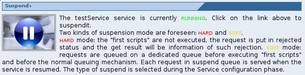

This functionality (and the corresponding section) is available only if a service is selected and the service is running.
This functionality (and the corresponding section) is available only if a service is selected and the service is running.
To suspend the selected service click on the "Suspend" link in the Service Management page.

Two kinds of suspension mode are foreseen:
- HARD mode: the "first scripts" are not executed, the request is put in rejected status and the get result will be information of such rejection
- SOFT mode: requests are queued on a dedicated queue before executing "first scripts" and before the normal queuing mechanism. Each request in suspend queue is served when the service is resumed.
The suspension mode is defined during the service configuration.